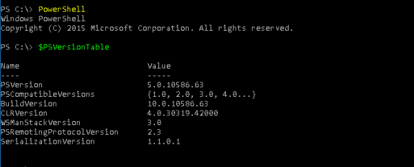

check software preinstalled
To exfiltrate data from a computer we can use the preinstalled softwares
•
Python
•
PowerShell
with $PSVersionTable we can check the version
C:> powershell
PS> $PSVersionTable
